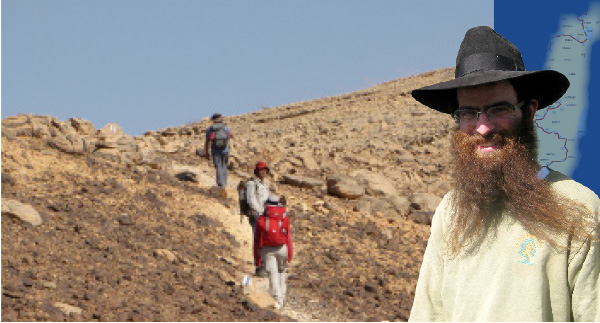

Angels of Shlichus
For three years now, those who walk the Israel National Trail (Shvil Yisrael) that extends from one end of the country to the other know the Grizi family as “Trail Angels.” They open their home dozens of times a year for hundreds of hikers walking across the country and provide full room and board. We visited Nitzan and his wife Avigayil to hear what it’s all about. That day, they had seven hikers staying with them.

The Mt Miron Nature Reserve is the largest, and one of the nicest, in all of Eretz Yisroel. As you climb the mountainous ridge you see a breathtaking green vista. Due to the climate conditions, the nature lover will find rare flowers, trees and a wide diversity of wildlife. Springs of pure water are scattered about. Most of the orchids found in the country grow in this reserve.
In order to protect this beautiful area and to prevent vandalizing, there are rangers whose job it is to watch over this and other nature reserves. A Lubavitcher Chassid from the nearby Chabad community in Tzfas, Nitzan Grizi, is the ranger for the Mt Miron Nature Reserve.
“During a few months of the year, primarily in the winter, there isn’t much work. I can spend hours sitting and listening to shiurim.”
However, this interview was not about his work protecting the preserve, but about his special shlichus. He and his family are in the small circle of people called “Trail Angels.”
Who are these Trail Angels? We asked Nitzan and his wife Avigayil when we visited their home. Their answer drove home the point that every Chassid can become a shliach of the Rebbe and spread the wellsprings outward without much effort and without even needing to leave the cocoon of his community.
TRAIL ANGELS
Trail Angels are people who agree to host hikers who are walking across Eretz Yisroel on the “Shvil Yisrael,” a length of 580-620 miles which takes an average of 45-60 days to complete. (According to statistics compiled in 2010, only 4 out of 10 hikers complete the entire trail). Hundreds and thousands of people take on this challenge, to traverse the “Shvil Yisrael,” which passes through villages and forests, streams and nature preserves. Along the way they need places to stop off, refresh themselves, do laundry, eat and rest.
This is where the hosting families come into the picture. In modern Israeli jargon, people like these are called “HaYisraeli HaYaffeh” (fine Israeli). We call them compassionate, hospitable Jews. These people, referred to as angels, live in yishuvim or cities along the Shvil, starting from Kibbutz Dan in the north, near the Lebanese border, to Eilat in the south. They offer their homes to hikers for free. Some offer sleeping accommodations, some offer food and drink; the common denominator among them is that it’s all for free. Their names and addresses are on the website of the nature preserves under the heading, “Trail Angels.”
To the best of our knowledge, the Grizi family of Tzfas is the only Lubavitcher family out of the dozens of families who volunteer their services.
“There is another shliach, in the south, whom we heard also hosts people,” said Nitzan. He said only fanatical hikers manage to finish the Shvil on foot, down to Eilat. “And in the south, unlike the north, there is no water and no trees. A lot of the hiking is done in exposed areas under the burning sun. Many people who start at Kibbutz Dan do not manage to complete the trail in Eilat.”
Nitzan does everything in a low-key way. For example, he won’t even talk about his car gemach. He only agreed to talk about the Trail Angels, because it can encourage other Lubavitcher families to join the project.
I first heard about their work when Mrs. Grizi called me and asked me to host two hiking couples for Friday night. “They will sleep in our house, but since we will be in Yerushalayim, we can’t host them for the meal,” she explained. We happily agreed to host them.
The young couples showed up on time. The men were former combat buddies, who were joined by their wives. Two of them were from kibbutzim in the Carmel area who said they had never experienced a Shabbos meal before, and they had never sat down to talk directly with religious Jews.
During the meal, we got into a long and interesting discussion. They were curious about our way of life and wanted to know about the Rebbe and Chassidus. They were serious people who wanted to understand things.
When they went on their way, one of them said with a smile, “We won’t tell you what we thought of you before the meal.”
“We had no idea how pleasant it would be to spend time with people like you,” said the other. This is the way we became acquainted with this special sort of outreach that requires almost no effort, and yet is so productive.
During this interview, which took place a few weeks later, we met Nitzan in his house, cooking and talking to two hikers. As we walked in, we interrupted a lively conversation with Alex, a discharged officer, who asked, “What did Chassidus innovate?” Later on, he told us that this was the first time he was talking to an ultra-Orthodox Jew.
“I live in Ashdod where there are two neighborhoods of ultra-Orthodox and two neighborhoods of Russian immigrants. The two groups do not mix.”
“I BELIEVE IN THE COMING OF MOSHIACH”
When we sat down to talk with Nitzan, we weren’t surprised to hear that he himself is from a kibbutz, not far from Beit Shaan. We asked him to tell us about himself.
“I was given a kibbutz education, just like in the stories, but my parents always had respect for Jewish traditions. I was living in conflict, because within the kibbutz I did not feel much love for tradition, but in my home I saw my father make Kiddush Friday night. My mother loves Tanach and she told us stories from the weekly parsha.
“When I was in second grade, my father became sick and the doctors discovered a problem with his heart. When he recovered, he put up mezuzos in our house. That was an unusual thing to do on a kibbutz in those days. He also began keeping kosher. He comes from a family that was not religious, but a Jew is a Jew. There is no other way to explain his great interest in keeping mitzvos.
“One time, before I became a baal t’shuva, he told me that when he was young he decided to start going to shul in the city where he lived, Tel Aviv. On the way, he bought tzitzis and put them on. This inspired moment, unfortunately, did not last.
“My parents built their home in kibbutz Beit HaShitta because that is where my mother is from. Despite the atheistic education she got on the kibbutz, she saw eye to eye with my father about tradition. In her academic background she has a doctorate in Judaic studies, and apparently this affected her on a deep level.
“So the house I grew up in wasn’t quite religious, but there was a lot of respect for tradition and a great love for the Jewish people and Eretz Yisrael. Perhaps this is the reason I was always different from kids my age. It was clear to me from the youngest age that there is a G-d and I would even debate my friends on this.
“I remember 3 Tammuz 5754. I was twelve years old and all the television news stations discussed the Rebbe. When I asked my mother who the Lubavitcher Rebbe was, she said he was the leader of the Jewish people who lived in New York and his Chassidim say he is ‘chai v’kayam’ and ‘Melech HaMoshiach.’ Although this sounds divorced from reality, I accepted it. I found it intriguing. I was always drawn to depth and I felt this is what I was looking for.
“I so related to it that without really understanding what Moshiach is all about, I took a white T-shirt that I had and I wrote on it, ‘Ani Maamin B’emuna Shleima B’Bias HaMoshiach.’ I walked around the kibbutz with this shirt and when people asked me about it, I said I was waiting for the coming of Moshiach, as simple as that.”
FROM THE ARMY TO THE YESHIVA IN RAMAT AVIV
When Nitzan became of draft age, he was drafted into the Intelligence Corps.
“After basic training followed by extremely difficult special training, I was attached to a field intelligence scouting unit. Another step in my journey was when I met a religious fellow where I was stationed, from the knitted kippot sector, who shared guard duty with me. We spent hours together and he taught me Pirkei Avos. I enjoyed it and I looked forward to spending guard duty with him so I could learn and hear more.
“At a certain point, I took an officers’ course. We were taught in the kibbutz to go as far as we could in the army, and that was my goal. During and after the course, there were some occasions when I saw incredible hashgacha pratis. I could see that Hashem responded ‘measure for measure.’ I was already convinced that I would not be able to continue living the way I had and that one day I would do t’shuva.
“During the second Lebanon war, I was on the battlefield when it hit me. That night, my thoughts gave me no rest. My heart told me: you know the truth already, so why are you continuing to sit on the fence?
“I resolved that the next day I would start to put on t’fillin and wear tzitzis. I was still walking around without a kippa, but I wore tzitzis that flapped in the breeze.”
After his discharge from the army, having attained the rank of captain, Nitzan was sent by the army to further his studies in the Glilot region. One Erev Shabbos, when he returned to the kibbutz, he hitched a ride. The driver happened to be a Lubavitcher bachur. When he heard that Nitzan wanted to learn Torah, he told him about a farbrengen of the shliach R’ Yitzchok Yadgar, at yishuv Gan-Ner. Nitzan attended the farbrengen and was very impressed. At the end of the farbrengen, he asked R’ Yadgar where there was a yeshiva he could attend. He was told about the yeshiva in Ramat Aviv.
“I felt at home on the very first day that I went to the yeshiva. I felt that I had finally come to the place that my neshama had sought ever since I could remember. The first shiur I heard was from R’ Goldberg, who later became my brother-in-law. He taught the maamer ‘Rosh HaShana that Falls Out on Shabbos,’ and explained it beautifully. After the shiur I thought, this is the place for me.
“In Ramat Aviv, I found the Truth. In yeshiva, they spoke about G-dliness, the neshama, about transforming the world into a dwelling for G-d, about refining the world in preparation for the Geula, and doing it all with warmth and enthusiasm.
“As for Moshiach, as I said, it was in me from when I was a kid. It came naturally to me. In Tishrei of that year, I went to 770 where my connection with the Rebbe was finalized. You feel the Rebbe there. There is a Rebbe in the world.”
A DEBATE ABOUT THE VIEW THAT LED TO YESHIVA
The Grizi family is known to the hikers of the Shvil Yisrael for three years now as Trail Angels. They open their home dozens of times a year for hundreds of hikers who receive room and board from them. How did it all start, we wondered?
“After we married, we joined the community in Tzfas and I went to work for the Israel Nature and Parks Authority as a ranger in the Mt Miron Nature Reserve. I wanted work that involved my hands and not my head (‘yigia kapecha’). This job allows me plenty of time to myself and that’s what I wanted, to learn and make up for what I hadn’t learned in my younger years. I soon became aware of the Shvil Eretz Yisrael. I met hikers, in the winter and summer, sleeping under bushes and in caves. I felt bad for them. I was told that the idea is not to go home until they finish the route, but coming to someone else’s home wouldn’t be cheating. I began inviting them to my house.
“They told me about an Internet site called “Trail Angels,” which has all the names of the families that are willing to host hikers. We lived in a small home at the time, but we hosted as many as fifteen hikers there. If there is room in the heart, there is room for everything and every Jew. These hikers, who are walking with minimum food and changes of clothing, need a place with a shower, a bed and decent food, and that is what we provide.”
The special thing about this is the direct encounter between a Chassidic family and irreligious youth, some of whom come from kibbutzim that are far from the path of Torah. What makes this encounter that much more powerful is that they are in tourist mode and as such they are willing to listen. Some of them go on this journey in order to meet up with different cultures within Eretz Yisroel. This is why they are far more receptive than if someone would meet them on an ordinary day in their own home.
“We’ve had all kinds, young and old, religious and irreligious, people who came from nearly every part of Eretz Yisroel and even abroad.”
I asked Nitzan for some interesting examples of such encounters and he obliged.
“We once had a guy from Rosh HaAyin by the name of Dvir. He had been a former national Bible Contest winner. We spoke for hours. He is also an Angel of the Shvil in his hometown so we spoke about that, but also about the Rebbe and Chassidus. Over Shabbos, we went out to the porch and he said that the view was of the Kinneret, while I said it was the Golan Mountains.
“He was so sure that he was right that he committed to going to the yeshiva in Ramat Aviv for three days if I was right. When we checked it out on Motzaei Shabbos, he saw he was wrong. A week later he kept his promise and went to learn in Ramat Aviv.”
Nitzan had another story:
“We hosted a couple that in the current vernacular are referred to as ‘spiritual,’ the type that eats healthy and are searching. They had hiked in many places of the world for two years and had decided to tour our country. When someone comes on a weekday and has the time, we recommend Eyal Reiss’ Kabbala Center in the old city. They went there and loved it.
“When they came back, my wife saw the husband looking at our library for a long time, as though he was looking for something. She asked him whether she could be of help and he asked whether we had a Tanya, because R’ Reiss had quoted a line from it that had touched him. He took the Tanya and sat with it for a few hours. Then he asked questions about faith and Judaism that showed he understood a thing or two of what he had read.
“Before they left, the man said that his grandfather told him that his family descended, son after son, from a tzaddik called the ‘Defender of Israel.’ I told him that the tzaddik’s name was Rabbi Levi Yitzchok of Berditchev who was a relative by marriage of the author of the Tanya, the book he had enjoyed so much, and perhaps it was no coincidence that his soul was seeking the truth.”
***
One thing Nitzan feels bad about is that it’s very hard to maintain a connection. People come for a night or two and then move on.
“We try to keep in touch. It’s not easy. What has been happening lately is astounding. There are some hikers who began, of their own initiative, to keep in touch. I recently got regards from one of the kibbutzim in the center of the country. Two guys who were here and enjoyed their stay decided to start a shiur at their kibbutz. They contacted the shliach in a nearby city and he comes every week to the house of one of them and they sit and learn sichos and maamarim.”
MIRACLES AT THE BANK
When I asked about the lack of privacy when he has guests, Nitzan shrugs and asks: how do all of the Rebbe’s shluchim around the world manage?
Mrs. Grizi says that not only isn’t it hard, but they enjoy it immensely. She was taught to live this way since she was a tot.
“My parents in the Old City of Yerushalayim always had guests. They are very hospitable and are very gracious about it. That is how I was raised.”
What about the fact that hosting costs money. Who pays for it all?
“We bear the cost and feel that it brings us blessings. We see how, each time, the financial end of things miraculously works out. We are in the midst of the tourist season which makes our expenses grow. My wife thought she would get a certain sum as her salary and ended up getting double that amount.
“Last year, after Pesach, we returned to Tzfas after visiting my in-laws in Yerushalayim. On the way, I checked my bank balance. There were 300+ shekels and that was before we paid the electric bill, property tax and rent. At first I felt stressed and wondered what we would do. A significant part of our expenses were because of the hikers and it looked as though it was going to bring us to financial ruin.
“Then, when I opened the mail box the next day, there was a letter from the bank saying they wanted to pay off a CD account that I had from 5764. I was in the army at the time and I have no idea who opened a CD for me to the tune of 6000 shekels. We felt so strongly that G-d was looking out for us. We constantly witness divine providence.”
YOUR SHLICHUS IS IN ERETZ YISRAEL!
When I asked whether they write to the Rebbe, the answer was:
“Of course. I want to tell you something amazing. Last year, we had an offer to go on shlichus to Dharamsala, India for Pesach. We were very interested and made the initial preparations to go. But before we got completely involved, we wrote to the Rebbe through the Igros Kodesh. The answer we opened to kept us in Eretz Yisroel. The Rebbe wrote a sharp letter to a Chassid who tried to escape from the day-to-day drudgery of his life. The Rebbe wrote him that his shlichus is in Eretz Yisroel.
“We didn’t need more than that. We stayed here and hosted many guests.”
***
When I asked whether they see how the world is ready for Moshiach in their work with the hikers, they responded:
“We always talk about it. It’s the motto of our shlichus – to bring about the Yemos HaMoshiach. The truth is that nowadays, I don’t feel like I am telling people anything new. I just remind people. In my work at the nature reserve, I stop my jeep near hikers and say that they need to await Moshiach’s coming because it’s happening imminently. They take me seriously and say amen. Today people feel that the only answer is Moshiach.
“I found the descendent of R’ Levi Yitzchok of Berditchev, that I told you about, staring at a picture of the Rebbe that hangs in our house. When I asked him if he knows who the man in the picture is, he said, ‘Of course, Melech HaMoshiach. And he needs to come back to us again.’
“The world is more ready than ever. The topic of Geula cuts across all demographic differences. The Rebbe instilled it in the world. Even if it seems that the person you’re talking to is resistant or doesn’t understand, don’t despair because in the end he’ll understand. The truth gets through.”
***
I asked the Grizis how far is the limit. After all, they have a Chassidic home and the people they invite were not raised with the same values.
“You have to understand that these are quality people, either youngsters after serving in army combat units, or people with high spiritual awareness who relate to nature. People like this understand what the rules are when they enter a religious home or, at least, they ask what is allowed and what isn’t.
“It has almost never happened that we found ourselves having to set boundaries, but since you asked, we have one room for boys and one for girls and we tell them the laws of yichud.
***
“Our big dream is for there to be Lubavitcher “Angels” all along the Shvil Yisrael, so that tourists will hear Chassidus at every place they stop. The message we want to convey is: it’s not impossible. Some people have spacious homes and can designate a room or two. And the expenses are not great. As I said, these hikers are open to listening and this is a wonderful opportunity to share things. Whoever wants additional information is welcome to contact us and we would be delighted to provide guidance based on our experience.”
A SOLDIER RETURNS TO HIS POST ON PURIM
Nitzan relates:
On Purim, the kibbutz I grew up in has a memorial for one of the members of the kibbutz, Yotam Lotan, who was killed before the second Lebanon war while in the army. He was my youth counselor at the kibbutz, who served in the Armored Corps, a quality young man. Whenever Purim comes around, I think about him.
I decided to do something that would be of benefit to his neshama and I bought some D’var Malchus booklets and gave them out to whoever wanted one.
That year, I wanted a break from mivtzaim. I could have decided to go on mivtzaim, but I chose the easy way out.
That day, as my fellow Lubavitchers in Tzfas were getting ready to go and visit bases and kibbutzim, I went to work. When I reached my lookout post, I put in a CD of the shiur I planned to listen to that day. The speaker began with a story about a Chassid, R’ Moshe Yitzchok of Iasi (Romania). He was given an assignment by the Alter Rebbe to spread Chassidus in his city, where the tzaddik the Apter Rav lived. At that time, the Apter Rav was opposed to the path of Chassidus of Chabad.
When he heard that someone in his community was spreading the teachings of Chabad, he asked him to stop. When R’ Moshe Yitzchok did not heed his instructions, the Apter Rebbe said he would not live out the year. R’ Moshe Yitzchok then went to the Alter Rebbe in a fright. The Apter Rav was known as someone whose words came true. Upon arriving, he found out that the Alter Rebbe had passed away. He was very upset and he spoke with the Mitteler Rebbe. Together with him was another Chassid who spoke about his son-in-law who wanted to learn all the time and was not thinking about making a living.
The Mitteler Rebbe told the two of them that there are two kinds of governments, a civil government and a military government. He explained the advantages and disadvantages of each kind of government, such that the judicial system of either one cannot judge the other. A politician is judged in a civil court and a soldier is judged by his commander who knows his abilities and his prior performance.
To the man whose son-in-law learned, he said to leave him alone and let him continue learning. To R’ Moshe Yitzchok he said, you are a soldier of my father and nobody can judge you but him.
When I heard this story, I felt that the Rebbe was conveying a message to me. Am I a soldier or a politician, I asked myself. Then I immediately told R’ Yitzchok Lifsh who organizes the Purim mivtzaim in Tzfas that I would be participating.
That Mivtza Purim was especially moving. We went to an army post way up north and put t’fillin on a soldier standing in the exact place where I had stood for months during my own army service.
Nosson Avrohom. "Angels of Shlichus." Beis Moshiach, no. 890 (August 1, 2013).